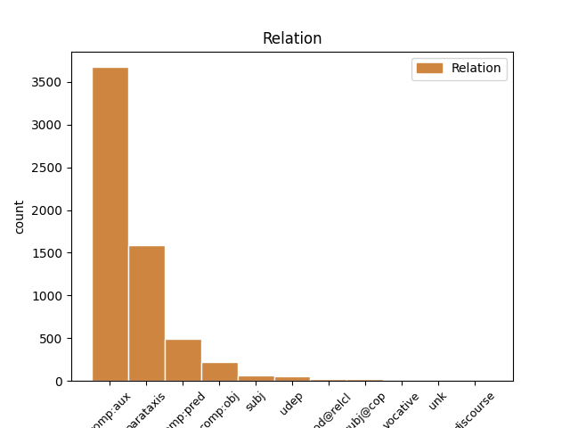
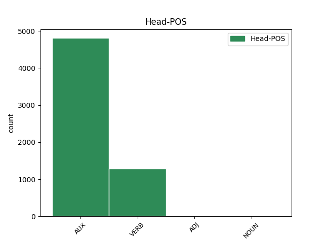
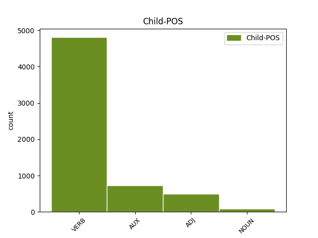

Distribution of features within this leaf



Agreement Rules sorted by frequency.
- When the dependent token is the parataxis(parataxis) of the head token, and the dependent token is VERB.
1 Töö _ _ _ _ 0 _ _ _
2 " _ _ _ _ 0 _ _ _
3 koguhulk _ _ _ _ 0 _ _ _
4 " _ _ _ _ 0 _ _ _
5 on olema AUX V Mood=Ind|Number=Sing|Person=3|Tense=Pres|VerbForm=Fin|Voice=Act 0 _ _ _
6 vahemikus _ _ _ _ 0 _ _ _
7 1989-2001. _ _ _ _ 0 _ _ _
8 a. _ _ _ _ 0 _ _ _
9 vähenenud _ _ _ _ 0 _ _ _
10 mitme _ _ _ _ 0 _ _ _
11 ETU _ _ _ _ 0 _ _ _
12 näitaja _ _ _ _ 0 _ _ _
13 alusel _ _ _ _ 0 _ _ _
14 nagu _ _ _ _ 0 _ _ _
15 näiteks _ _ _ _ 0 _ _ _
16 keskmine _ _ _ _ 0 _ _ _
17 nädala _ _ _ _ 0 _ _ _
18 töötundide _ _ _ _ 0 _ _ _
19 arv _ _ _ _ 0 _ _ _
20 ja _ _ _ _ 0 _ _ _
21 kõrvaltööde _ _ _ _ 0 _ _ _
22 osakaal _ _ _ _ 0 _ _ _
23 ; _ _ _ _ 0 _ _ _
24 inimeste _ _ _ _ 0 _ _ _
25 osakaal _ _ _ _ 0 _ _ _
26 , _ _ _ _ 0 _ _ _
27 kes _ _ _ _ 0 _ _ _
28 soovivad _ _ _ _ 0 _ _ _
29 rohkem _ _ _ _ 0 _ _ _
30 töötada _ _ _ _ 0 _ _ _
31 kasvab kasvama VERB V Mood=Ind|Number=Sing|Person=3|Tense=Pres|VerbForm=Fin|Voice=Act 5 parataxis _ _
32 nii _ _ _ _ 0 _ _ _
33 nagu _ _ _ _ 0 _ _ _
34 ka _ _ _ _ 0 _ _ _
35 uue _ _ _ _ 0 _ _ _
36 ja _ _ _ _ 0 _ _ _
37 lisatöö _ _ _ _ 0 _ _ _
38 otsijate _ _ _ _ 0 _ _ _
39 osakaal _ _ _ _ 0 _ _ _
40 ning _ _ _ _ 0 _ _ _
41 inimeste _ _ _ _ 0 _ _ _
42 osakaal _ _ _ _ 0 _ _ _
43 , _ _ _ _ 0 _ _ _
44 kes _ _ _ _ 0 _ _ _
45 töötavad _ _ _ _ 0 _ _ _
46 osaajaga _ _ _ _ 0 _ _ _
47 , _ _ _ _ 0 _ _ _
48 kuna _ _ _ _ 0 _ _ _
49 ei _ _ _ _ 0 _ _ _
50 leia _ _ _ _ 0 _ _ _
51 täisaja _ _ _ _ 0 _ _ _
52 tööd _ _ _ _ 0 _ _ _
53 . _ _ _ _ 0 _ _ _
1 Tööturg _ _ _ _ 0 _ _ _
2 näib näima AUX V Mood=Ind|Number=Sing|Person=3|Tense=Pres|VerbForm=Fin|Voice=Act 0 _ _ _
3 reageerivat reageerima VERB V Mood=Qot|Tense=Pres|VerbForm=Fin|Voice=Act 2 comp:aux _ _
4 ka _ _ _ _ 0 _ _ _
5 tööhõive _ _ _ _ 0 _ _ _
6 kokkutõmbumisele _ _ _ _ 0 _ _ _
7 mittetraditsioonilise _ _ _ _ 0 _ _ _
8 tööhõive _ _ _ _ 0 _ _ _
9 kasvuga _ _ _ _ 0 _ _ _
10 . _ _ _ _ 0 _ _ _
1 Pealegi _ _ _ _ 0 _ _ _
2 on olema AUX V Mood=Ind|Number=Sing|Person=3|Tense=Pres|VerbForm=Fin|Voice=Act 0 _ _ _
3 allhankel _ _ _ _ 0 _ _ _
4 baseeruv _ _ _ _ 0 _ _ _
5 tööhõive _ _ _ _ 0 _ _ _
6 , _ _ _ _ 0 _ _ _
7 eriti _ _ _ _ 0 _ _ _
8 kõrgtehnoloogiasektoris _ _ _ _ 0 _ _ _
9 , _ _ _ _ 0 _ _ _
10 rahvusvahelise _ _ _ _ 0 _ _ _
11 majanduskonjunktuuri _ _ _ _ 0 _ _ _
12 halvenedes _ _ _ _ 0 _ _ _
13 kiirelt _ _ _ _ 0 _ _ _
14 vähenev vähene=v ADJ A Case=Nom|Degree=Pos|Number=Sing|Tense=Pres|VerbForm=Part|Voice=Act 2 comp:pred _ SpaceAfter=No
15 . _ _ _ _ 0 _ _ _
1 Hästi _ _ _ _ 0 _ _ _
2 kinnimakstud _ _ _ _ 0 _ _ _
3 inimene _ _ _ _ 0 _ _ _
4 teeb tegema VERB V Mood=Ind|Number=Sing|Person=3|Tense=Pres|VerbForm=Fin|Voice=Act 0 _ _ _
5 aga _ _ _ _ 0 _ _ _
6 reeglina _ _ _ _ 0 _ _ _
7 ka _ _ _ _ 0 _ _ _
8 rohkem _ _ _ _ 0 _ _ _
9 tööd _ _ _ _ 0 _ _ _
10 ( _ _ _ _ 0 _ _ _
11 on olema AUX V Mood=Ind|Number=Sing|Person=3|Tense=Pres|VerbForm=Fin|Voice=Act 4 parataxis _ _
12 produktiivsem _ _ _ _ 0 _ _ _
13 - _ _ _ _ 0 _ _ _
14 sh _ _ _ _ 0 _ _ _
15 kaasinimeste _ _ _ _ 0 _ _ _
16 eest _ _ _ _ 0 _ _ _
17 ) _ _ _ _ 0 _ _ _
18 . _ _ _ _ 0 _ _ _
1 See _ _ _ _ 0 _ _ _
2 näitab näitama VERB V Mood=Ind|Number=Sing|Person=3|Tense=Pres|VerbForm=Fin|Voice=Act 0 _ _ _
3 , _ _ _ _ 0 _ _ _
4 kui _ _ _ _ 0 _ _ _
5 olulist _ _ _ _ 0 _ _ _
6 rolli _ _ _ _ 0 _ _ _
7 mängivad mängima VERB V Mood=Ind|Number=Plur|Person=3|Tense=Pres|VerbForm=Fin|Voice=Act 2 comp:obj _ _
8 edukad _ _ _ _ 0 _ _ _
9 ettevõtted _ _ _ _ 0 _ _ _
10 uute _ _ _ _ 0 _ _ _
11 töökohtade _ _ _ _ 0 _ _ _
12 loomisel _ _ _ _ 0 _ _ _
13 ( _ _ _ _ 0 _ _ _
14 Lewis _ _ _ _ 0 _ _ _
15 , _ _ _ _ 0 _ _ _
16 1995 _ _ _ _ 0 _ _ _
17 ) _ _ _ _ 0 _ _ _
18 . _ _ _ _ 0 _ _ _
1 Omaette _ _ _ _ 0 _ _ _
2 küsimus _ _ _ _ 0 _ _ _
3 on olema AUX V Mood=Ind|Number=Sing|Person=3|Tense=Pres|VerbForm=Fin|Voice=Act 0 _ _ _
4 , _ _ _ _ 0 _ _ _
5 milline _ _ _ _ 0 _ _ _
6 võiks võima AUX V Mood=Cnd|Tense=Pres|VerbForm=Fin|Voice=Act 3 comp:obj _ _
7 olla _ _ _ _ 0 _ _ _
8 ametiühingute _ _ _ _ 0 _ _ _
9 tegevuse _ _ _ _ 0 _ _ _
10 reaalne _ _ _ _ 0 _ _ _
11 mõju _ _ _ _ 0 _ _ _
12 töötajate _ _ _ _ 0 _ _ _
13 palkade _ _ _ _ 0 _ _ _
14 taseme _ _ _ _ 0 _ _ _
15 eest _ _ _ _ 0 _ _ _
16 võitlemisel _ _ _ _ 0 _ _ _
17 . _ _ _ _ 0 _ _ _
1 Hõivest _ _ _ _ 0 _ _ _
2 töötusse _ _ _ _ 0 _ _ _
3 või _ _ _ _ 0 _ _ _
4 mitteaktiivsusesse _ _ _ _ 0 _ _ _
5 liikumises _ _ _ _ 0 _ _ _
6 ( _ _ _ _ 0 _ _ _
7 joonis _ _ _ _ 0 _ _ _
8 9 _ _ _ _ 0 _ _ _
9 ) _ _ _ _ 0 _ _ _
10 oli olema AUX V Mood=Ind|Number=Sing|Person=3|Tense=Past|VerbForm=Fin|Voice=Act 0 _ _ _
11 tööandja _ _ _ _ 0 _ _ _
12 poolt _ _ _ _ 0 _ _ _
13 algatatud _ _ _ _ 0 _ _ _
14 protsesside _ _ _ _ 0 _ _ _
15 ( _ _ _ _ 0 _ _ _
16 ettevõtte/asutuse _ _ _ _ 0 _ _ _
17 likvideerimine _ _ _ _ 0 _ _ _
18 , _ _ _ _ 0 _ _ _
19 reorganiseerimine _ _ _ _ 0 _ _ _
20 , _ _ _ _ 0 _ _ _
21 pankrotistumine _ _ _ _ 0 _ _ _
22 , _ _ _ _ 0 _ _ _
23 erastamine _ _ _ _ 0 _ _ _
24 ; _ _ _ _ 0 _ _ _
25 vallandamine _ _ _ _ 0 _ _ _
26 , _ _ _ _ 0 _ _ _
27 koondamine _ _ _ _ 0 _ _ _
28 tööandja _ _ _ _ 0 _ _ _
29 algatusel _ _ _ _ 0 _ _ _
30 ; _ _ _ _ 0 _ _ _
31 tähtajalise _ _ _ _ 0 _ _ _
32 töölepingu _ _ _ _ 0 _ _ _
33 lõppemine _ _ _ _ 0 _ _ _
34 , _ _ _ _ 0 _ _ _
35 katseaja _ _ _ _ 0 _ _ _
36 lõppemine _ _ _ _ 0 _ _ _
37 ) _ _ _ _ 0 _ _ _
38 osakaal _ _ _ _ 0 _ _ _
39 olnud olema AUX V Tense=Past|VerbForm=Part|Voice=Act 10 comp:aux _ _
40 ligikaudu _ _ _ _ 0 _ _ _
41 1/5 _ _ _ _ 0 _ _ _
42 . _ _ _ _ 0 _ _ _
1 Kaua _ _ _ _ 0 _ _ _
2 selliseks _ _ _ _ 0 _ _ _
3 operatsiooniks _ _ _ _ 0 _ _ _
4 aega _ _ _ _ 0 _ _ _
5 kulub kuluma VERB V Mood=Ind|Number=Sing|Person=3|Tense=Pres|VerbForm=Fin|Voice=Act 7 subj _ SpaceAfter=No
6 , _ _ _ _ 0 _ _ _
7 sõltub sõltuma VERB V Mood=Ind|Number=Sing|Person=3|Tense=Pres|VerbForm=Fin|Voice=Act 0 _ _ _
8 eeskätt _ _ _ _ 0 _ _ _
9 sellest _ _ _ _ 0 _ _ _
10 , _ _ _ _ 0 _ _ _
11 kas _ _ _ _ 0 _ _ _
12 kasutatakse _ _ _ _ 0 _ _ _
13 USB1.1 _ _ _ _ 0 _ _ _
14 või _ _ _ _ 0 _ _ _
15 USB _ _ _ _ 0 _ _ _
16 2.0 _ _ _ _ 0 _ _ _
17 liidest _ _ _ _ 0 _ _ _
18 . _ _ _ _ 0 _ _ _
1 413 _ _ _ _ 0 _ _ _
2 uuritust uuri=tu NOUN S Case=Ela|Number=Sing|Tense=Past|VerbForm=Part|Voice=Pass 3 udep _ _
3 hindas hindama VERB V Mood=Ind|Number=Sing|Person=3|Tense=Past|VerbForm=Fin|Voice=Act 0 _ _ _
4 oma _ _ _ _ 0 _ _ _
5 une _ _ _ _ 0 _ _ _
6 kvaliteeti _ _ _ _ 0 _ _ _
7 heaks _ _ _ _ 0 _ _ _
8 või _ _ _ _ 0 _ _ _
9 pigem _ _ _ _ 0 _ _ _
10 heaks _ _ _ _ 0 _ _ _
11 69,2 _ _ _ _ 0 _ _ _
12 % _ _ _ _ 0 _ _ _
13 ( _ _ _ _ 0 _ _ _
14 286 _ _ _ _ 0 _ _ _
15 ) _ _ _ _ 0 _ _ _
16 ; _ _ _ _ 0 _ _ _
17 rahuldavaks _ _ _ _ 0 _ _ _
18 23,7 _ _ _ _ 0 _ _ _
19 % _ _ _ _ 0 _ _ _
20 ( _ _ _ _ 0 _ _ _
21 98 _ _ _ _ 0 _ _ _
22 ) _ _ _ _ 0 _ _ _
23 ning _ _ _ _ 0 _ _ _
24 pigem _ _ _ _ 0 _ _ _
25 halvaks _ _ _ _ 0 _ _ _
26 või _ _ _ _ 0 _ _ _
27 halvaks _ _ _ _ 0 _ _ _
28 7,0 _ _ _ _ 0 _ _ _
29 % _ _ _ _ 0 _ _ _
30 ( _ _ _ _ 0 _ _ _
31 29 _ _ _ _ 0 _ _ _
32 ) _ _ _ _ 0 _ _ _
33 . _ _ _ _ 0 _ _ _
1 Sageli _ _ _ _ 0 _ _ _
2 võivad _ _ _ _ 0 _ _ _
3 invasiiv-diagnostilisel _ _ _ _ 0 _ _ _
4 eesmärgil _ _ _ _ 0 _ _ _
5 teostatava _ _ _ _ 0 _ _ _
6 sõlmede _ _ _ _ 0 _ _ _
7 eemaldamise _ _ _ _ 0 _ _ _
8 järel _ _ _ _ 0 _ _ _
9 amüloidoosikolded _ _ _ _ 0 _ _ _
10 taastekkida _ _ _ _ 0 _ _ _
11 , _ _ _ _ 0 _ _ _
12 seejuures _ _ _ _ 0 _ _ _
13 on olema AUX V Mood=Ind|Number=Sing|Person=3|Tense=Pres|VerbForm=Fin|Voice=Act 0 _ _ _
14 teadmata _ _ _ _ 0 _ _ _
15 , _ _ _ _ 0 _ _ _
16 kas _ _ _ _ 0 _ _ _
17 põhjuseks _ _ _ _ 0 _ _ _
18 on olema AUX V Mood=Ind|Number=Sing|Person=3|Tense=Pres|VerbForm=Fin|Voice=Act 13 subj _ _
19 ebatäielik _ _ _ _ 0 _ _ _
20 resektsioon _ _ _ _ 0 _ _ _
21 või _ _ _ _ 0 _ _ _
22 areneb _ _ _ _ 0 _ _ _
23 haigus _ _ _ _ 0 _ _ _
24 ise _ _ _ _ 0 _ _ _
25 edasi _ _ _ _ 0 _ _ _
26 uute _ _ _ _ 0 _ _ _
27 sõlmede _ _ _ _ 0 _ _ _
28 moodustumisega _ _ _ _ 0 _ _ _
29 . _ _ _ _ 0 _ _ _
1 Mobiilsuse _ _ _ _ 0 _ _ _
2 kahanemise _ _ _ _ 0 _ _ _
3 üks _ _ _ _ 0 _ _ _
4 näitaja _ _ _ _ 0 _ _ _
5 on _ _ _ _ 0 _ _ _
6 ka _ _ _ _ 0 _ _ _
7 pikaajalise _ _ _ _ 0 _ _ _
8 ja _ _ _ _ 0 _ _ _
9 lühiajalise _ _ _ _ 0 _ _ _
10 tööpuuuduse _ _ _ _ 0 _ _ _
11 " _ _ _ _ 0 _ _ _
12 positsioonide _ _ _ _ 0 _ _ _
13 " _ _ _ _ 0 _ _ _
14 vahetus _ _ _ _ 0 _ _ _
15 töötuses _ _ _ _ 0 _ _ _
16 , _ _ _ _ 0 _ _ _
17 kus _ _ _ _ 0 _ _ _
18 pikaajalise _ _ _ _ 0 _ _ _
19 töötuse _ _ _ _ 0 _ _ _
20 osakaal _ _ _ _ 0 _ _ _
21 ületab _ _ _ _ 0 _ _ _
22 lühiajalise _ _ _ _ 0 _ _ _
23 tööpuuduse _ _ _ _ 0 _ _ _
24 osakaalu _ _ _ _ 0 _ _ _
25 peale _ _ _ _ 0 _ _ _
26 1995. _ _ _ _ 0 _ _ _
27 a. _ _ _ _ 0 _ _ _
28 , _ _ _ _ 0 _ _ _
29 st _ _ _ _ 0 _ _ _
30 koos _ _ _ _ 0 _ _ _
31 stabiliseerumisega _ _ _ _ 0 _ _ _
32 hakkas _ _ _ _ 0 _ _ _
33 toimima _ _ _ _ 0 _ _ _
34 ka _ _ _ _ 0 _ _ _
35 mehhanism _ _ _ _ 0 _ _ _
36 , _ _ _ _ 0 _ _ _
37 mille _ _ _ _ 0 _ _ _
38 järgi _ _ _ _ 0 _ _ _
39 nii _ _ _ _ 0 _ _ _
40 hõivatud hõiva=tu NOUN S Case=Nom|Number=Plur|Tense=Past|VerbForm=Part|Voice=Pass 46 subj _ _
41 kui _ _ _ _ 0 _ _ _
42 ka _ _ _ _ 0 _ _ _
43 töötuks _ _ _ _ 0 _ _ _
44 jäänud _ _ _ _ 0 _ _ _
45 " _ _ _ _ 0 _ _ _
46 kapseldusid kapselduma VERB V Mood=Ind|Number=Plur|Person=3|Tense=Past|VerbForm=Fin|Voice=Act 0 _ _ _
47 " _ _ _ _ 0 _ _ _
48 ning _ _ _ _ 0 _ _ _
49 eriti _ _ _ _ 0 _ _ _
50 töötusest _ _ _ _ 0 _ _ _
51 hõivesse _ _ _ _ 0 _ _ _
52 liikumise _ _ _ _ 0 _ _ _
53 võimalused _ _ _ _ 0 _ _ _
54 hakkasid _ _ _ _ 0 _ _ _
55 vähenema _ _ _ _ 0 _ _ _
56 . _ _ _ _ 0 _ _ _
1 Kui _ _ _ _ 0 _ _ _
2 mammi _ _ _ _ 0 _ _ _
3 oli _ _ _ _ 0 _ _ _
4 lahkunud _ _ _ _ 0 _ _ _
5 , _ _ _ _ 0 _ _ _
6 keeras _ _ _ _ 0 _ _ _
7 isa _ _ _ _ 0 _ _ _
8 valjuhääldaja _ _ _ _ 0 _ _ _
9 nupu _ _ _ _ 0 _ _ _
10 põhja _ _ _ _ 0 _ _ _
11 ning _ _ _ _ 0 _ _ _
12 kordas kordama VERB V Mood=Ind|Number=Sing|Person=3|Tense=Past|VerbForm=Fin|Voice=Act 0 _ _ _
13 tehtut tehtu NOUN S Case=Par|Number=Sing|Tense=Past|VerbForm=Part|Voice=Pass 12 comp:obj _ _
14 maksimumvõimsuse _ _ _ _ 0 _ _ _
15 ja _ _ _ _ 0 _ _ _
16 naudinguga _ _ _ _ 0 _ _ _
17 . _ _ _ _ 0 _ _ _
1 Eesti _ _ _ _ 0 _ _ _
2 elanikkonna _ _ _ _ 0 _ _ _
3 heaolu _ _ _ _ 0 _ _ _
4 võib võima AUX V Mood=Ind|Number=Sing|Person=3|Tense=Pres|VerbForm=Fin|Voice=Act 0 _ _ _
5 vaadelda _ _ _ _ 0 _ _ _
6 koosnevana koosnev ADJ A Case=Ess|Degree=Pos|Number=Sing|Tense=Pres|VerbForm=Part|Voice=Act 4 udep _ _
7 kahest _ _ _ _ 0 _ _ _
8 komponendist _ _ _ _ 0 _ _ _
9 : _ _ _ _ 0 _ _ _
10 mittemateriaalsest _ _ _ _ 0 _ _ _
11 ja _ _ _ _ 0 _ _ _
12 materiaalsest _ _ _ _ 0 _ _ _
13 ehk _ _ _ _ 0 _ _ _
14 hindadest _ _ _ _ 0 _ _ _
15 tulenevast _ _ _ _ 0 _ _ _
16 komponendist _ _ _ _ 0 _ _ _
17 . _ _ _ _ 0 _ _ _
1 Mittestatsionaarsuse _ _ _ _ 0 _ _ _
2 probleemi _ _ _ _ 0 _ _ _
3 toob tooma VERB V Mood=Ind|Number=Sing|Person=3|Tense=Pres|VerbForm=Fin|Voice=Act 0 _ _ _
4 kõige _ _ _ _ 0 _ _ _
5 selgemalt _ _ _ _ 0 _ _ _
6 välja _ _ _ _ 0 _ _ _
7 informatsiooni _ _ _ _ 0 _ _ _
8 vajamise _ _ _ _ 0 _ _ _
9 kiirus _ _ _ _ 0 _ _ _
10 - _ _ _ _ 0 _ _ _
11 eelmise _ _ _ _ 0 _ _ _
12 kuu _ _ _ _ 0 _ _ _
13 müügi- _ _ _ _ 0 _ _ _
14 või _ _ _ _ 0 _ _ _
15 mõõtmiste _ _ _ _ 0 _ _ _
16 tulemuste _ _ _ _ 0 _ _ _
17 analüüsi _ _ _ _ 0 _ _ _
18 täna _ _ _ _ 0 _ _ _
19 kätte _ _ _ _ 0 _ _ _
20 saada _ _ _ _ 0 _ _ _
21 võib võima AUX V Mood=Ind|Number=Sing|Person=3|Tense=Pres|VerbForm=Fin|Voice=Act 3 comp:pred _ _
22 olla _ _ _ _ 0 _ _ _
23 juba _ _ _ _ 0 _ _ _
24 liiga _ _ _ _ 0 _ _ _
25 hilja _ _ _ _ 0 _ _ _
26 . _ _ _ _ 0 _ _ _
1 See _ _ _ _ 0 _ _ _
2 oli _ _ _ _ 0 _ _ _
3 kõrgeim _ _ _ _ 0 _ _ _
4 2000. _ _ _ _ 0 _ _ _
5 aastal _ _ _ _ 0 _ _ _
6 , _ _ _ _ 0 _ _ _
7 ulatudes _ _ _ _ 0 _ _ _
8 17,1 _ _ _ _ 0 _ _ _
9 %-ni _ _ _ _ 0 _ _ _
10 neist _ _ _ _ 0 _ _ _
11 hõivatuist hõiva=tu NOUN S Case=Ela|Number=Plur|Tense=Past|VerbForm=Part|Voice=Pass 0 _ _ _
12 , _ _ _ _ 0 _ _ _
13 kes _ _ _ _ 0 _ _ _
14 otsisid otsima VERB V Mood=Ind|Number=Plur|Person=3|Tense=Past|VerbForm=Fin|Voice=Act 11 mod@relcl _ _
15 uut _ _ _ _ 0 _ _ _
16 tööd _ _ _ _ 0 _ _ _
17 . _ _ _ _ 0 _ _ _
1 Neuroloog _ _ _ _ 0 _ _ _
2 oli _ _ _ _ 0 _ _ _
3 meie _ _ _ _ 0 _ _ _
4 looga _ _ _ _ 0 _ _ _
5 algusest _ _ _ _ 0 _ _ _
6 peale _ _ _ _ 0 _ _ _
7 kursis _ _ _ _ 0 _ _ _
8 ja _ _ _ _ 0 _ _ _
9 kõik _ _ _ _ 0 _ _ _
10 kontrollid _ _ _ _ 0 _ _ _
11 said saama VERB V Mood=Ind|Number=Plur|Person=3|Tense=Past|VerbForm=Fin|Voice=Act 0 _ _ _
12 ära _ _ _ _ 0 _ _ _
13 tehtud tegema VERB V Tense=Past|VerbForm=Part|Voice=Pass 11 comp:pred _ SpaceAfter=No
14 , _ _ _ _ 0 _ _ _
15 " _ _ _ _ 0 _ _ _
16 ütleb _ _ _ _ 0 _ _ _
17 Inga _ _ _ _ 0 _ _ _
18 . _ _ _ _ 0 _ _ _
1 eeldame _ _ _ _ 0 _ _ _
2 , _ _ _ _ 0 _ _ _
3 et _ _ _ _ 0 _ _ _
4 allhanke _ _ _ _ 0 _ _ _
5 tegijad _ _ _ _ 0 _ _ _
6 saavad _ _ _ _ 0 _ _ _
7 varsti _ _ _ _ 0 _ _ _
8 hoo _ _ _ _ 0 _ _ _
9 sisse _ _ _ _ 0 _ _ _
10 ; _ _ _ _ 0 _ _ _
11 samas _ _ _ _ 0 _ _ _
12 on olema AUX V Mood=Ind|Number=Sing|Person=3|Tense=Pres|VerbForm=Fin|Voice=Act 0 _ _ _
13 kahtlane _ _ _ _ 0 _ _ _
14 , _ _ _ _ 0 _ _ _
15 kas _ _ _ _ 0 _ _ _
16 see _ _ _ _ 0 _ _ _
17 oluliselt _ _ _ _ 0 _ _ _
18 töökohtade _ _ _ _ 0 _ _ _
19 juurdekasvu _ _ _ _ 0 _ _ _
20 tekitab tekitama VERB V Mood=Ind|Number=Sing|Person=3|Tense=Pres|VerbForm=Fin|Voice=Act 12 subj@cop _ SpaceAfter=No
21 , _ _ _ _ 0 _ _ _
22 kuna _ _ _ _ 0 _ _ _
23 eriti _ _ _ _ 0 _ _ _
24 kõrgtehnoloogia _ _ _ _ 0 _ _ _
25 sektori _ _ _ _ 0 _ _ _
26 allhanke _ _ _ _ 0 _ _ _
27 osa _ _ _ _ 0 _ _ _
28 üldises _ _ _ _ 0 _ _ _
29 tööhõives _ _ _ _ 0 _ _ _
30 on _ _ _ _ 0 _ _ _
31 perifeerne _ _ _ _ 0 _ _ _
32 oletame _ _ _ _ 0 _ _ _
33 , _ _ _ _ 0 _ _ _
34 et _ _ _ _ 0 _ _ _
35 " _ _ _ _ 0 _ _ _
36 otseeksportijad _ _ _ _ 0 _ _ _
37 " _ _ _ _ 0 _ _ _
38 ( _ _ _ _ 0 _ _ _
39 mitte _ _ _ _ 0 _ _ _
40 -allhanke _ _ _ _ 0 _ _ _
41 tegijad _ _ _ _ 0 _ _ _
42 ) _ _ _ _ 0 _ _ _
43 jätkavad _ _ _ _ 0 _ _ _
44 enam-vähem _ _ _ _ 0 _ _ _
45 normaalselt _ _ _ _ 0 _ _ _
46 . _ _ _ _ 0 _ _ _
1 Schmidti _ _ _ _ 0 _ _ _
2 hüpotees _ _ _ _ 0 _ _ _
3 sai saama VERB V Mood=Ind|Number=Sing|Person=3|Tense=Past|VerbForm=Fin|Voice=Act 0 _ _ _
4 Stalini _ _ _ _ 0 _ _ _
5 korraldusel _ _ _ _ 0 _ _ _
6 riiklikuks _ _ _ _ 0 _ _ _
7 teadusdoktriiniks _ _ _ _ 0 _ _ _
8 , _ _ _ _ 0 _ _ _
9 mis _ _ _ _ 0 _ _ _
10 jällegi _ _ _ _ 0 _ _ _
11 pidi pidama AUX V Mood=Ind|Number=Sing|Person=3|Tense=Past|VerbForm=Fin|Voice=Act 3 mod@relcl _ _
12 demonstreerima _ _ _ _ 0 _ _ _
13 nõukogude _ _ _ _ 0 _ _ _
14 teaduse _ _ _ _ 0 _ _ _
15 üleolekut _ _ _ _ 0 _ _ _
16 . _ _ _ _ 0 _ _ _
1 “ _ _ _ _ 0 _ _ _
2 Uue _ _ _ _ 0 _ _ _
3 aastatuhande _ _ _ _ 0 _ _ _
4 alguses _ _ _ _ 0 _ _ _
5 ei _ _ _ _ 0 _ _ _
6 ole _ _ _ _ 0 _ _ _
7 ülemaailmse _ _ _ _ 0 _ _ _
8 elatustaseme _ _ _ _ 0 _ _ _
9 alanemise _ _ _ _ 0 _ _ _
10 põhjuseks _ _ _ _ 0 _ _ _
11 “ _ _ _ _ 0 _ _ _
12 ressursside _ _ _ _ 0 _ _ _
13 puudus _ _ _ _ 0 _ _ _
14 ” _ _ _ _ 0 _ _ _
15 , _ _ _ _ 0 _ _ _
16 ” _ _ _ _ 0 _ _ _
17 tõdeb _ _ _ _ 0 _ _ _
18 Chossudovsky _ _ _ _ 0 _ _ _
19 ja _ _ _ _ 0 _ _ _
20 võrdleb võrdlema VERB V Mood=Ind|Number=Sing|Person=3|Tense=Pres|VerbForm=Fin|Voice=Act 0 _ _ _
21 praegu _ _ _ _ 0 _ _ _
22 maailmas _ _ _ _ 0 _ _ _
23 toimuvat toimuv ADJ A Case=Par|Degree=Pos|Number=Sing|Tense=Pres|VerbForm=Part|Voice=Act 20 comp:obj _ _
24 omaaegse _ _ _ _ 0 _ _ _
25 koloniaalmajandusega _ _ _ _ 0 _ _ _
26 . _ _ _ _ 0 _ _ _
1 2.2 _ _ _ _ 0 _ _ _
2 “ _ _ _ _ 0 _ _ _
3 Kodukamaral _ _ _ _ 0 _ _ _
4 nokitsejatel _ _ _ _ 0 _ _ _
5 ” _ _ _ _ 0 _ _ _
6 raha _ _ _ _ 0 _ _ _
7 tuleb _ _ _ _ 0 _ _ _
8 ja _ _ _ _ 0 _ _ _
9 läheb _ _ _ _ 0 _ _ _
10 , _ _ _ _ 0 _ _ _
11 kuid _ _ _ _ 0 _ _ _
12 alati _ _ _ _ 0 _ _ _
13 on olema AUX V Mood=Ind|Number=Sing|Person=3|Tense=Pres|VerbForm=Fin|Voice=Act 0 _ _ _
14 seda _ _ _ _ 0 _ _ _
15 “ _ _ _ _ 0 _ _ _
16 va _ _ _ _ 0 _ _ _
17 krabisevat krabisev NOUN S Case=Par|Number=Sing|Tense=Pres|VerbForm=Part|Voice=Act 13 subj@cop _ _
18 ” _ _ _ _ 0 _ _ _
19 piisavalt _ _ _ _ 0 _ _ _
20 . _ _ _ _ 0 _ _ _
1 Huvitav huvitav ADJ A Tense=Pres|VerbForm=Part|Voice=Pass 0 _ _ _
2 , _ _ _ _ 0 _ _ _
3 mis _ _ _ _ 0 _ _ _
4 ta _ _ _ _ 0 _ _ _
5 nimi _ _ _ _ 0 _ _ _
6 võiks võima AUX V Mood=Cnd|Tense=Pres|VerbForm=Fin|Voice=Act 1 subj@cop _ _
7 olla _ _ _ _ 0 _ _ _
8 - _ _ _ _ 0 _ _ _
9 arutles _ _ _ _ 0 _ _ _
10 üleöö _ _ _ _ 0 _ _ _
11 kooliõpetajaks _ _ _ _ 0 _ _ _
12 saanud _ _ _ _ 0 _ _ _
13 treial _ _ _ _ 0 _ _ _
14 - _ _ _ _ 0 _ _ _
15 ja _ _ _ _ 0 _ _ _
16 mis _ _ _ _ 0 _ _ _
17 aine _ _ _ _ 0 _ _ _
18 õpetaja _ _ _ _ 0 _ _ _
19 ma _ _ _ _ 0 _ _ _
20 olen _ _ _ _ 0 _ _ _
21 ? _ _ _ _ 0 _ _ _
1 Hulgimüügi _ _ _ _ 0 _ _ _
2 tööhõivet _ _ _ _ 0 _ _ _
3 suurendav _ _ _ _ 0 _ _ _
4 panus _ _ _ _ 0 _ _ _
5 tunduks tunduma AUX V Mood=Cnd|Tense=Pres|VerbForm=Fin|Voice=Act 0 _ _ _
6 kodumaise _ _ _ _ 0 _ _ _
7 nõudluse _ _ _ _ 0 _ _ _
8 madalseisu _ _ _ _ 0 _ _ _
9 arvestades _ _ _ _ 0 _ _ _
10 mõneti _ _ _ _ 0 _ _ _
11 üllatav üllatav ADJ A Case=Nom|Degree=Pos|Number=Sing|Tense=Pres|VerbForm=Part|Voice=Act 5 comp:aux _ SpaceAfter=No
12 , _ _ _ _ 0 _ _ _
13 kuid _ _ _ _ 0 _ _ _
14 kaubanduspindade _ _ _ _ 0 _ _ _
15 väljaehitamine _ _ _ _ 0 _ _ _
16 on _ _ _ _ 0 _ _ _
17 äärmiselt _ _ _ _ 0 _ _ _
18 pikaajaline _ _ _ _ 0 _ _ _
19 protsess _ _ _ _ 0 _ _ _
20 . _ _ _ _ 0 _ _ _
1 Lii _ _ _ _ 0 _ _ _
2 Undi _ _ _ _ 0 _ _ _
3 selgitused _ _ _ _ 0 _ _ _
4 riietuse _ _ _ _ 0 _ _ _
5 läbi _ _ _ _ 0 _ _ _
6 saadetavatest _ _ _ _ 0 _ _ _
7 alateadvusele _ _ _ _ 0 _ _ _
8 suunatud _ _ _ _ 0 _ _ _
9 signaalidest _ _ _ _ 0 _ _ _
10 on olema AUX V Mood=Ind|Number=Sing|Person=3|Tense=Pres|VerbForm=Fin|Voice=Act 0 _ _ _
11 muidugi _ _ _ _ 0 _ _ _
12 huvitavad _ _ _ _ 0 _ _ _
13 , _ _ _ _ 0 _ _ _
14 aga _ _ _ _ 0 _ _ _
15 vaevalt _ _ _ _ 0 _ _ _
16 on olema AUX V Mood=Ind|Number=Sing|Person=3|Tense=Pres|VerbForm=Fin|Voice=Act 10 udep _ _
17 nendel _ _ _ _ 0 _ _ _
18 nii _ _ _ _ 0 _ _ _
19 ühene _ _ _ _ 0 _ _ _
20 tõlgendus _ _ _ _ 0 _ _ _
21 . _ _ _ _ 0 _ _ _
1 Carl _ _ _ _ 0 _ _ _
2 Benzi _ _ _ _ 0 _ _ _
3 , _ _ _ _ 0 _ _ _
4 Gottlieb _ _ _ _ 0 _ _ _
5 Daimleri _ _ _ _ 0 _ _ _
6 ja _ _ _ _ 0 _ _ _
7 teiste _ _ _ _ 0 _ _ _
8 suuruste _ _ _ _ 0 _ _ _
9 hulgas _ _ _ _ 0 _ _ _
10 osutusid osutuma VERB V Mood=Ind|Number=Plur|Person=3|Tense=Past|VerbForm=Fin|Voice=Act 0 _ _ _
11 väljavalituteks välja_valitu NOUN S Case=Tra|Number=Plur|Tense=Past|VerbForm=Part|Voice=Pass 10 comp:pred _ _
12 ka _ _ _ _ 0 _ _ _
13 kaks _ _ _ _ 0 _ _ _
14 elavat _ _ _ _ 0 _ _ _
15 klassikut _ _ _ _ 0 _ _ _
16 - _ _ _ _ 0 _ _ _
17 lähipäevil _ _ _ _ 0 _ _ _
18 80aastaseks _ _ _ _ 0 _ _ _
19 saav _ _ _ _ 0 _ _ _
20 Fiati _ _ _ _ 0 _ _ _
21 kontserni _ _ _ _ 0 _ _ _
22 auesimees _ _ _ _ 0 _ _ _
23 Giovanni _ _ _ _ 0 _ _ _
24 Agnelli _ _ _ _ 0 _ _ _
25 ning _ _ _ _ 0 _ _ _
26 62aastane _ _ _ _ 0 _ _ _
27 staardisainer _ _ _ _ 0 _ _ _
28 Giorgetto _ _ _ _ 0 _ _ _
29 Giugiaro _ _ _ _ 0 _ _ _
30 . _ _ _ _ 0 _ _ _
1 See _ _ _ _ 0 _ _ _
2 näide _ _ _ _ 0 _ _ _
3 puudutab _ _ _ _ 0 _ _ _
4 ainult _ _ _ _ 0 _ _ _
5 väga _ _ _ _ 0 _ _ _
6 väikest _ _ _ _ 0 _ _ _
7 osa _ _ _ _ 0 _ _ _
8 kliimasüsteemist _ _ _ _ 0 _ _ _
9 , _ _ _ _ 0 _ _ _
10 raskesti _ _ _ _ 0 _ _ _
11 ennustatavat ennusta=tav ADJ A Case=Par|Degree=Pos|Number=Sing|Tense=Pres|VerbForm=Part|Voice=Act 12 subj _ _
12 leidub leiduma VERB V Mood=Ind|Number=Sing|Person=3|Tense=Pres|VerbForm=Fin|Voice=Act 0 _ _ _
13 veel _ _ _ _ 0 _ _ _
14 palju _ _ _ _ 0 _ _ _
15 . _ _ _ _ 0 _ _ _
1 " _ _ _ _ 0 _ _ _
2 Laske laskma VERB V Mood=Imp|Number=Plur|Person=2|Tense=Pres|VerbForm=Fin|Voice=Act 0 _ _ _
3 mul _ _ _ _ 0 _ _ _
4 , _ _ _ _ 0 _ _ _
5 palun paluma VERB V Mood=Ind|Number=Sing|Person=1|Tense=Pres|VerbForm=Fin|Voice=Act 2 discourse _ SpaceAfter=No
6 , _ _ _ _ 0 _ _ _
7 selgitada _ _ _ _ 0 _ _ _
8 ! _ _ _ _ 0 _ _ _
9 " _ _ _ _ 0 _ _ _
10 ütlesin _ _ _ _ 0 _ _ _
11 valjusti _ _ _ _ 0 _ _ _
12 . _ _ _ _ 0 _ _ _
1 Riigisiseselt _ _ _ _ 0 _ _ _
2 võib _ _ _ _ 0 _ _ _
3 ühtedele _ _ _ _ 0 _ _ _
4 majandusagentidele _ _ _ _ 0 _ _ _
5 laekuv _ _ _ _ 0 _ _ _
6 kapital _ _ _ _ 0 _ _ _
7 tekitada _ _ _ _ 0 _ _ _
8 hoopis _ _ _ _ 0 _ _ _
9 lisanduvaid _ _ _ _ 0 _ _ _
10 suhtlemiskulusid _ _ _ _ 0 _ _ _
11 nende _ _ _ _ 0 _ _ _
12 ja _ _ _ _ 0 _ _ _
13 kapitalist _ _ _ _ 0 _ _ _
14 ilmajäänute ilma_jäänud ADJ A Case=Gen|Degree=Pos|Number=Plur|Tense=Past|VerbForm=Part|Voice=Act 0 _ _ _
15 ( _ _ _ _ 0 _ _ _
16 vähem _ _ _ _ 0 _ _ _
17 saanute saanu NOUN S Case=Gen|Number=Plur|Tense=Past|VerbForm=Part|Voice=Act 14 parataxis _ SpaceAfter=No
18 ) _ _ _ _ 0 _ _ _
19 vahel _ _ _ _ 0 _ _ _
20 . _ _ _ _ 0 _ _ _
Disagree Examples:
1 Keskpanga _ _ _ _ 0 _ _ _
2 avalike _ _ _ _ 0 _ _ _
3 suhete _ _ _ _ 0 _ _ _
4 osakonna _ _ _ _ 0 _ _ _
5 juht _ _ _ _ 0 _ _ _
6 Andrus _ _ _ _ 0 _ _ _
7 Kuusmann _ _ _ _ 0 _ _ _
8 ütleb _ _ _ _ 0 _ _ _
9 , _ _ _ _ 0 _ _ _
10 et _ _ _ _ 0 _ _ _
11 " _ _ _ _ 0 _ _ _
12 kui _ _ _ _ 0 _ _ _
13 tegu _ _ _ _ 0 _ _ _
14 olnuks _ _ _ _ 0 _ _ _
15 tõestatud _ _ _ _ 0 _ _ _
16 rahapesuga _ _ _ _ 0 _ _ _
17 , _ _ _ _ 0 _ _ _
18 siis _ _ _ _ 0 _ _ _
19 oleks olema AUX V Mood=Cnd|Tense=Pres|VerbForm=Fin|Voice=Act 0 _ _ _
20 ka _ _ _ _ 0 _ _ _
21 vastavalt _ _ _ _ 0 _ _ _
22 reageeritud reageerima VERB V Tense=Past|VerbForm=Part|Voice=Pass 19 comp:aux _ SpaceAfter=No
23 " _ _ _ _ 0 _ _ _
24 . _ _ _ _ 0 _ _ _
1 " _ _ _ _ 0 _ _ _
2 Tegutsesime _ _ _ _ 0 _ _ _
3 nende _ _ _ _ 0 _ _ _
4 võimaluste _ _ _ _ 0 _ _ _
5 piirides _ _ _ _ 0 _ _ _
6 , _ _ _ _ 0 _ _ _
7 mis _ _ _ _ 0 _ _ _
8 meile _ _ _ _ 0 _ _ _
9 on olema AUX V Mood=Ind|Number=Plur|Person=3|Tense=Pres|VerbForm=Fin|Voice=Act 0 _ _ _
10 antud andma VERB V Tense=Past|VerbForm=Part|Voice=Pass 9 comp:aux _ SpaceAfter=No
11 , _ _ _ _ 0 _ _ _
12 " _ _ _ _ 0 _ _ _
13 ütleb _ _ _ _ 0 _ _ _
14 ta _ _ _ _ 0 _ _ _
15 . _ _ _ _ 0 _ _ _
1 " _ _ _ _ 0 _ _ _
2 Tegutsesime tegutsema VERB V Mood=Ind|Number=Plur|Person=1|Tense=Past|VerbForm=Fin|Voice=Act 0 _ _ _
3 nende _ _ _ _ 0 _ _ _
4 võimaluste _ _ _ _ 0 _ _ _
5 piirides _ _ _ _ 0 _ _ _
6 , _ _ _ _ 0 _ _ _
7 mis _ _ _ _ 0 _ _ _
8 meile _ _ _ _ 0 _ _ _
9 on _ _ _ _ 0 _ _ _
10 antud _ _ _ _ 0 _ _ _
11 , _ _ _ _ 0 _ _ _
12 " _ _ _ _ 0 _ _ _
13 ütleb ütlema VERB V Mood=Ind|Number=Sing|Person=3|Tense=Pres|VerbForm=Fin|Voice=Act 2 parataxis _ _
14 ta _ _ _ _ 0 _ _ _
15 . _ _ _ _ 0 _ _ _
1 Hansapanka _ _ _ _ 0 _ _ _
2 juhtis _ _ _ _ 0 _ _ _
3 kõnealusel _ _ _ _ 0 _ _ _
4 ajal _ _ _ _ 0 _ _ _
5 siseminister _ _ _ _ 0 _ _ _
6 Jüri _ _ _ _ 0 _ _ _
7 Mõis _ _ _ _ 0 _ _ _
8 , _ _ _ _ 0 _ _ _
9 kes _ _ _ _ 0 _ _ _
10 on olema AUX V Mood=Ind|Number=Sing|Person=3|Tense=Pres|VerbForm=Fin|Voice=Act 0 _ _ _
11 korduvalt _ _ _ _ 0 _ _ _
12 rõhutanud rõhutama VERB V Tense=Past|VerbForm=Part|Voice=Act 10 comp:aux _ _
13 heade _ _ _ _ 0 _ _ _
14 äritavade _ _ _ _ 0 _ _ _
15 ja _ _ _ _ 0 _ _ _
16 eetilise _ _ _ _ 0 _ _ _
17 käitumise _ _ _ _ 0 _ _ _
18 tähtsust _ _ _ _ 0 _ _ _
19 . _ _ _ _ 0 _ _ _
1 See _ _ _ _ 0 _ _ _
2 on _ _ _ _ 0 _ _ _
3 Šveitsi _ _ _ _ 0 _ _ _
4 suurima _ _ _ _ 0 _ _ _
5 panga _ _ _ _ 0 _ _ _
6 UBSi _ _ _ _ 0 _ _ _
7 haru _ _ _ _ 0 _ _ _
8 , _ _ _ _ 0 _ _ _
9 mis _ _ _ _ 0 _ _ _
10 on olema AUX V Mood=Ind|Number=Sing|Person=3|Tense=Pres|VerbForm=Fin|Voice=Act 0 _ _ _
11 tuntud tundma VERB V Tense=Past|VerbForm=Part|Voice=Pass 10 comp:aux _ _
12 numbrikontode _ _ _ _ 0 _ _ _
13 poolest _ _ _ _ 0 _ _ _
14 . _ _ _ _ 0 _ _ _